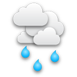

<main class="tracker-map" id="map"></main>

<div class="tracker-content">

    <section class="metrics">
        <div class="metrics--padded">
            <h2>Stats</h2>
            <p>Marathons completed:&nbsp;&nbsp;<strong>1/32</strong></p>
            <p>Total distance:&nbsp;&nbsp;&nbsp;&nbsp;&nbsp;&nbsp;&nbsp;&nbsp;&nbsp;&nbsp;&nbsp;&nbsp;&nbsp;&nbsp;&nbsp;&nbsp;<strong>27 miles</strong></p>
            <p>Moving time:&nbsp;&nbsp;&nbsp;&nbsp;&nbsp;&nbsp;&nbsp;&nbsp;&nbsp;&nbsp;&nbsp;&nbsp;&nbsp;&nbsp;&nbsp;&nbsp;&nbsp;&nbsp;<strong>3h 41m</strong></p>
            <p>Dates consumed:&nbsp;&nbsp;&nbsp;&nbsp;&nbsp;&nbsp;&nbsp;&nbsp;&nbsp;&nbsp;&nbsp;<strong>> 8</strong></p>

            
        </div>

        <div class="strava-link">
            <a href="https://www.strava.com/athletes/runningforrefugees">
                
                More stats on Strava
                
            </a>
        </div>
    </section>


    <section class="twitter-wrapper">
        <a class="twitter-timeline" href="https://twitter.com/run4refugees">Tweets by run4refugees</a> <script async src="//platform.twitter.com/widgets.js" charset="utf-8"></script>
    </section>

</div>
